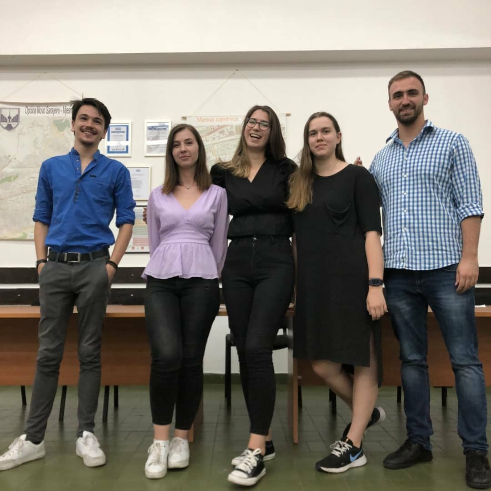
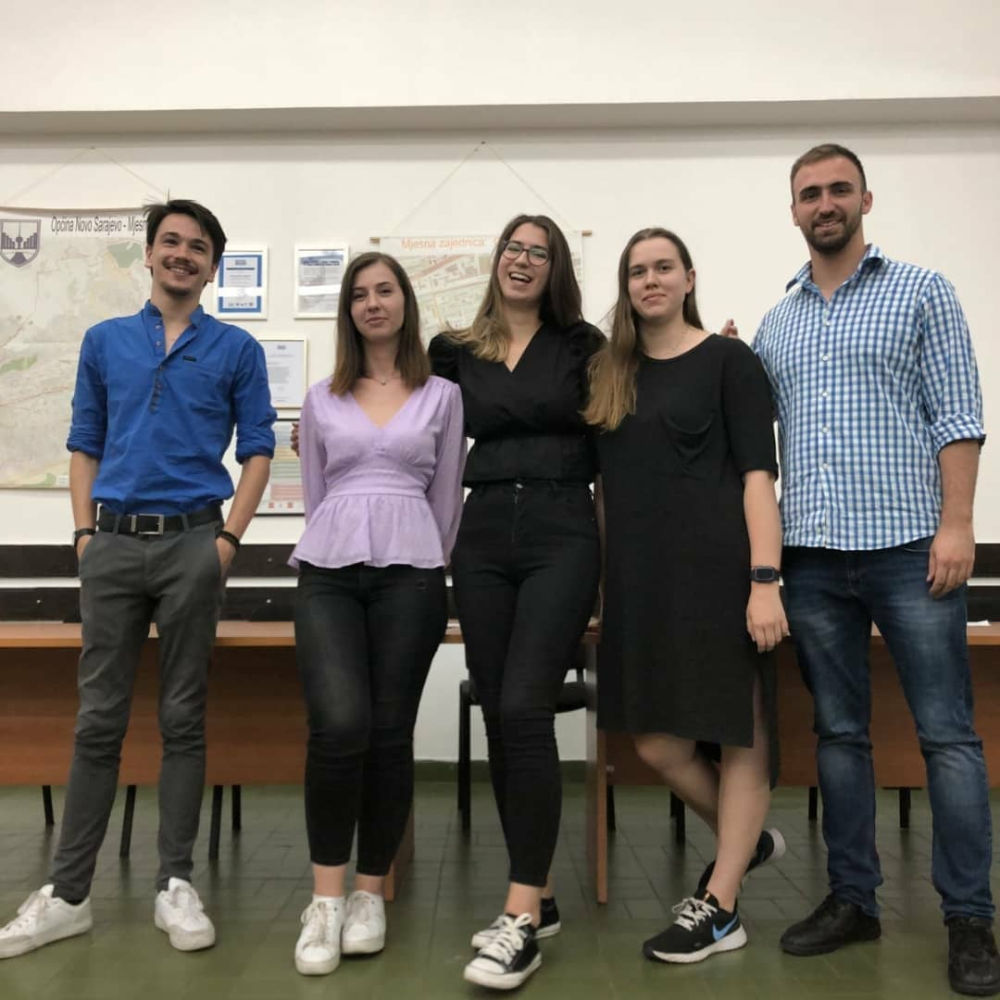

Udruženje Plus Ultra je pokrenuto inicijativom osoba koje su kroz vlastita iskustva prepoznali da formalno obrazovanje ne nudi vještine koje su potrebne za pronalazak stalnog i stabilnog zaposlenja. Plus Ultra je formiran u zamisli realizacije „mladi za mlade“, te je u potpunosti vođena mladim osobama.
Osnivačka skupština je održana 17. augusta 2021. godine u Sarajevu, te je na istoj usvojen Statut i donesena Odluka o osnivanju Udruženja, što je samo bio naredni korak u naporima koji su počeli već ranije te godine. Od januara do juna 2021. godine, grupa od 5 mladih ljudi je, kao neformalna grupa mladih Plus Ultra, implementirala projekat pod nazivom “Škola programiranja Plus Ultra”. S obzirom da se IT sektor u BiH smatra veoma perspektivnim, projekat je imao za cilj da osnaži mlade ljude i ponudi im kvalitetan dodatak njihovom srednjoškolskom obrazovanju, te doprinese suzbijanju stereotipa da je programiranje teško i bauk. Krajnja misao svega toga je bila da mladi, tako što se upuste u IT industriju lakše dođu do posla. Nakon uspješnosti pomenutog projekta, koji je dokazao da u društvu postoji velika potreba za aktivnostima koje pružaju podršku mladima, članovi neformalne grupe su napisali projektni prijedlog za BOLD program malih grantova te unutar projektnog prijedloga predvidjeli osnivanje Udruženja kao dugoročnog mehanizma pružanja podrške mladima. Kako bi ta podrška bila istinska i relevantna, strateški je odlučeno da Udruženje bude omladinsko, odnosno da upravljačke strukture čine mladi, koji će da kroz svoj rad kreiraju podsticajno okruženje za druge.